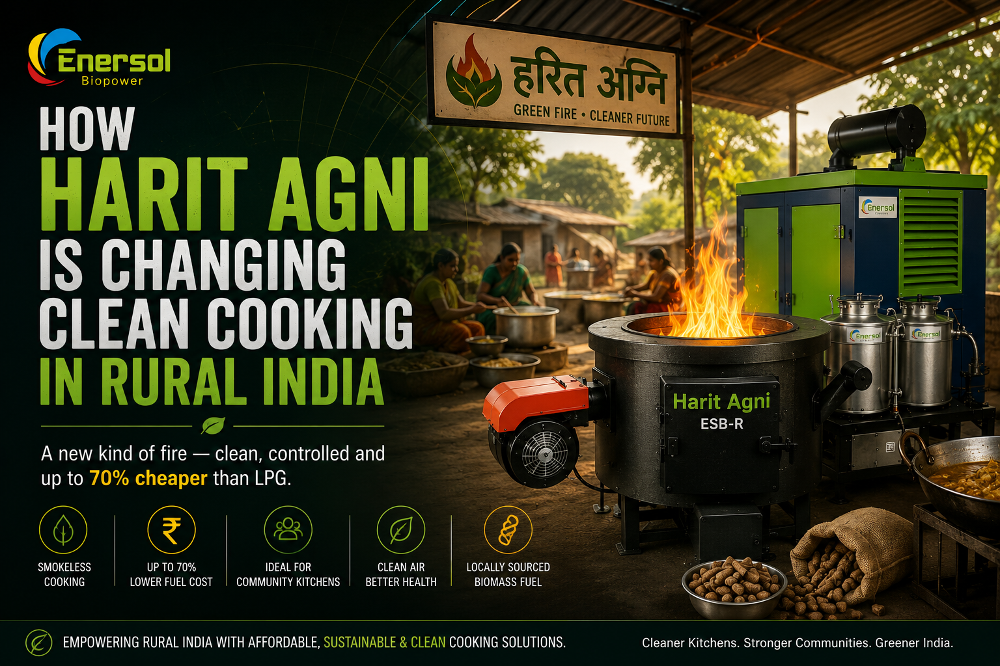

How Harit Agni Is Changing Clean Cooking in Rural India
In hundreds of rural dhabas, school kitchens, and community halls across India, a new kind of fire is burning — clean, controlled, and up to 70% cheaper than LPG. Its name is Harit Agni.
By Rai Singh Dahiya, Founder, Enersol Biopower | Published 26 June 2026

Key Article Highlights
- Harit Agni means "Green Fire" in Hindi — 35.5% thermal efficiency vs 8–12% for a traditional chulha
- Forced-draft technology eliminates black smoke — PM2.5 reduced by 60–75% vs open wood burning
- Fuel cost drops 60–70% versus LPG using locally sourced biomass briquettes
- Designed for 50–60 people per session — ideal for dhabas, mid-day meal programs, and rural canteens
- Biomass fuel sourced within 30–50 km of most rural kitchens — no LPG cylinder dependency
The Rural Cooking Problem India Has Not Solved
Over 700 million people in rural India still cook on solid fuel — firewood, cow dung, or agricultural residue burned on an open chulha. The World Health Organization estimates that indoor air pollution from cooking smoke causes over 600,000 deaths in India every year. A traditional mud chulha operates at just 8–12% thermal efficiency, meaning nearly 90% of the heat from burning firewood escapes into the air, the walls, and the cook's lungs instead of reaching the food.
LPG was promoted as the solution under the Pradhan Mantri Ujjwala Yojana scheme. But affordability remains a barrier in the deepest rural pockets — an LPG cylinder that costs ₹800–₹1,000 must be refilled every 15–20 days for a dhaba or mid-day meal program, adding up to ₹1,500–₹2,500 per month just for fuel. When subsidies are delayed or absent, rural kitchens revert to open wood burning.
There is a third option — one that Enersol Biopower has been building and refining for over 25 years. It is called Harit Agni.
What Is Harit Agni? The Name and the Technology
Harit (हरित) means green. Agni (अग्नि) means fire. Together, Harit Agni is Enersol Biopower's answer to the question: can a biomass fire be both powerful and clean?
The Harit Agni ESB-R is a forced-draft smokeless biomass stove — a category fundamentally different from a traditional chulha, tandoor, or open wood fire. Where a traditional stove relies on natural airflow and produces incomplete combustion, the Harit Agni uses a built-in 4-inch AC fan to push measured quantities of air into the combustion chamber at a controlled rate. This controlled airflow raises the flame temperature to 900–1,000°C — the threshold for near-complete combustion.
At that temperature, there is no black smoke — the characteristic sign of incomplete combustion that turns traditional chulha kitchens into health hazards. The flame burns blue and clean. The cook breathes clean air. And the heat goes where it is supposed to go: into the pot.
Harit Agni ESB-R: Technical Specifications
The Harit Agni comes in two variants — the ESB-R Harit-Agni12 and the ESB-R Harit-Agni12B (model number ESB-R/HA12). Both share the same core combustion technology with minor differences in firebox geometry suited to different fuel types.
| Specification | Harit Agni ESB-R |
|---|---|
| Fuel Type | 100% Biomass (briquettes, wood chips, agri-waste) |
| Stove Type | Forced-Draft (fan-assisted combustion) |
| Feeding Mode | Manual, Top Feeding |
| Thermal Output | 7–10 kg/hr equivalent heat |
| Biomass Consumption | 5–10 kg/hr |
| Thermal Efficiency | 35.5% |
| Flame Control | Built-in fan speed regulator |
| Power Requirement | 4" AC Fan |
| Material | High-grade Mild Steel |
| Weight | ~70 kg |
| Dimensions | H 22" × W 18" |
| Fuel Moisture Limit | Below 20% |
Harit Agni vs Traditional Chulha vs LPG: A Real Comparison
Rural kitchens in India typically choose between three options. Here is how they compare on the factors that matter most to a dhaba owner, school cook, or canteen manager:
| Factor | Traditional Chulha | LPG | Harit Agni |
|---|---|---|---|
| Thermal Efficiency | 8–12% | 55–60% | 35.5% |
| Monthly Fuel Cost (dhaba) | ₹3,000–₹6,000 (firewood) | ₹8,000–₹12,000 | ₹2,500–₹4,000 |
| Smoke / PM2.5 | 400–500 μg/m³ (dangerous) | Near zero | Very low — 60–75% less than chulha |
| Flame Control | Manual, inconsistent | Precise knob control | Fan speed regulator (adjustable) |
| Fuel Availability | Local wood (seasonal) | Cylinder dependency, price volatility | Briquettes within 30–50 km |
| Carbon Emissions | High + deforestation risk | Fossil CO₂ (non-renewable) | Carbon-neutral (IPCC biogenic cycle) |
| Cooking Capacity | 20–30 people | 20–40 people (multi-burner) | 50–60 people per session |
Who Uses Harit Agni in Rural India?
Harit Agni has been adopted across a wide range of rural and semi-rural cooking settings. Below are the six most common use cases where the stove is making a measurable difference:
1. Rural Dhabas and Food Stalls
A roadside dhaba serving 80–100 meals per day was spending ₹10,000–₹12,000/month on LPG. With Harit Agni and locally sourced briquettes, the same output costs ₹3,000–₹4,000/month. The stove's fan-speed control allows the same quality of cooking — dal, sabji, roti — that customers expect. Payback on the stove cost: 45–60 days.
2. Mid-Day Meal Programs in Schools
Under the PM Poshan Abhiyaan, rural schools prepare meals for 100–500 students daily. Open wood fire kitchens expose cooks to dangerous levels of indoor smoke. Harit Agni is smokeless, consistent in heat output, and efficient enough to handle bulk cooking — making it a safe and cost-effective replacement. Several schools in Rajasthan and Madhya Pradesh have adopted the stove through government nutrition programs.
3. Ashrams and Temple Kitchens
Ashrams and temples that serve daily langar or prasadam to hundreds of devotees require consistent high-output cooking at low cost. The Harit Agni's capacity for 50–60 people per session, combined with its coal-free, smoke-free operation, aligns well with the spiritual principle of cleanliness in food preparation.
4. Rural Hostels and Boarding Schools
Government hostels and residential tribal schools in rural India face a dual challenge: feeding hundreds of students on tight budgets while using fuels available in remote areas. Harit Agni solves both — the stove runs on agri-waste briquettes produced locally from crop residue, and the 35.5% thermal efficiency means less fuel consumption per meal.
5. Self Help Groups and Community Kitchens
Women's SHGs that run community kitchens, catering services, or food processing units benefit from Harit Agni's low fuel cost and smokeless operation. Reduced exposure to cooking smoke directly improves the health outcomes of women who spend 3–5 hours per day cooking — a well-documented intervention recommended by WHO's Household Energy and Health programme.
6. Small Hotels and Halwai Shops
Tea stalls, poha-idli stalls, pakora shops, and small sweet shops (halwai) are heavy fuel users but price-sensitive buyers. The Harit Agni 12-inch firebox is sized exactly for this segment — enough power for continuous cooking, small enough for a compact kitchen, and fuel costs low enough to improve margins significantly.
The Fuel Advantage: What Harit Agni Burns
One concern rural buyers raise is: "Where will I get the fuel?" It is a reasonable question — LPG refills come to your door. Biomass briquettes require a supply chain.
India produces over 500 million tonnes of agricultural waste annually — paddy straw, sugarcane bagasse, cotton stalks, mustard stalks, and wood chips from pruning. Much of this is currently burnt in fields, contributing to India's seasonal air quality crises. An estimated 30,000+ small briquette manufacturing units operate across rural India, within 30–50 km of most farming communities.
Fuels Accepted by Harit Agni
Requirement: Fuel moisture below 20% for complete combustion and smokeless operation.
The briquette supply chain in rural India has matured significantly over the last decade. Many farmers and SHGs now produce briquettes from crop residue as a secondary income, selling at ₹4–₹7 per kg — compared to LPG equivalent cost of ₹18–₹24 per kg of thermal output. For Harit Agni users burning 5–10 kg/hr, this translates to a running cost that is 60–70% lower than LPG.
The Environmental Equation
Critics sometimes argue that burning biomass is bad for the environment. The science tells a more nuanced story. Under IPCC (Intergovernmental Panel on Climate Change) guidelines, agricultural biomass is classified as carbon-neutral because the CO₂ released was captured by that crop during its growing season — a biogenic cycle, not a fossil cycle.
The comparison that matters is not "biomass vs clean air" — it is "Harit Agni forced-draft combustion vs the alternative." In rural India, the alternative is often open field burning of the same agricultural waste (contributing to India's stubble burning PM2.5 crises) or continued use of diesel and LPG (fossil fuels with no carbon neutrality claim).
Environmental Impact — Harit Agni vs Alternatives
- vs Open field burning: Agricultural waste is used for energy instead of being burnt in the open — same carbon, but with heat benefit and no ground-level smoke plume
- vs Traditional chulha: 60–75% less PM2.5 indoors. Forced-draft complete combustion vs incomplete open burning
- vs LPG: Zero fossil carbon emissions. Biomass CO₂ is biogenic (IPCC carbon-neutral)
- vs Kerosene: No toxic combustion byproducts. Kerosene produces benzene, formaldehyde, and CO at dangerous levels
Installation and Transition: What to Expect
One of the most common questions from rural kitchens is: "How difficult is it to switch?" The answer is straightforward:
Frequently Asked Questions
What is Harit Agni stove?
Harit Agni (meaning "Green Fire") is a forced-draft smokeless biomass stove by Enersol Biopower. Model ESB-R Harit-Agni12 delivers 7–10 kg/hr thermal output at 35.5% thermal efficiency, running on wood chips, briquettes, or agricultural waste. Designed for rural dhabas, community kitchens, schools, and canteens cooking for 50–60 people.
How much does Harit Agni save compared to LPG?
Harit Agni reduces fuel costs by 60–70% versus LPG. A dhaba spending ₹10,000/month on LPG can reduce that to ₹3,000–₹4,000/month using locally available biomass briquettes. Stove cost pays back within 45–90 days.
Is Harit Agni really smokeless?
Yes. The forced-draft fan raises flame temperature to 900–1,000°C — the threshold for complete combustion. At that temperature, no black smoke is produced. PM2.5 output is 60–75% lower than a traditional wood chulha.
What fuel does Harit Agni use?
100% biomass — paddy straw briquettes, sugarcane bagasse pellets, cotton stalk briquettes, wood chips, cow dung cakes. Fuel moisture must be below 20%. Briquettes are available within 30–50 km of most rural kitchens across India.
Is Harit Agni good for mid-day meal programs in rural schools?
Yes. The stove cooks for 50–60 people per session, operates smoke-free, and uses locally available biomass fuel. Several rural schools in Rajasthan and Madhya Pradesh use Harit Agni for PM Poshan Abhiyaan meal programs.
How hard is it to switch from LPG to Harit Agni?
Installation takes 4–6 hours. Staff training is 2–3 hours. Most rural kitchens are fully operational on Harit Agni within one week. No technical background required — the fan speed regulator makes it simple to operate.
Want Harit Agni for Your Kitchen?
Whether you run a rural dhaba, a school kitchen, a community hall, or an ashram — Harit Agni can cut your fuel cost by 60–70% from the first month.
Get a Free Quote →
Recipient of India's Fifth National Grassroots Innovation Award (2009), invited as Innovation Scholar-in-Residence at Rashtrapati Bhavan (2015). Over 25 years of experience designing biomass energy technology for rural India.